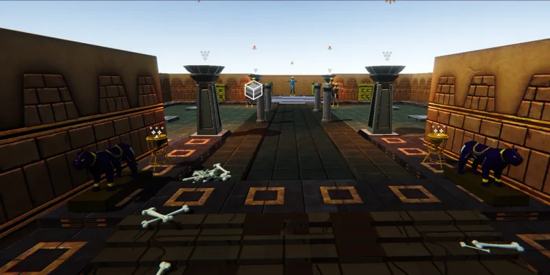
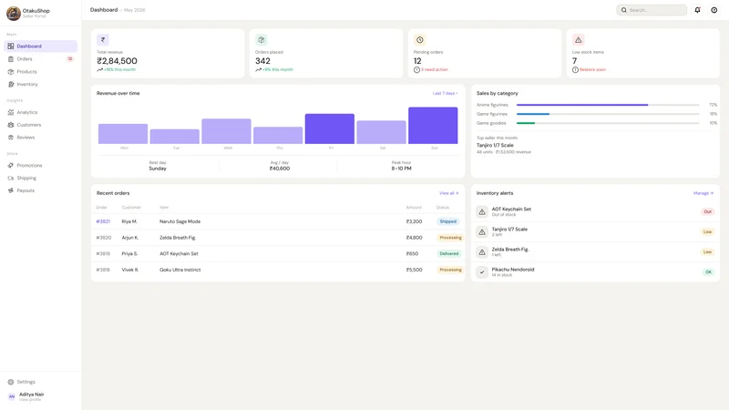
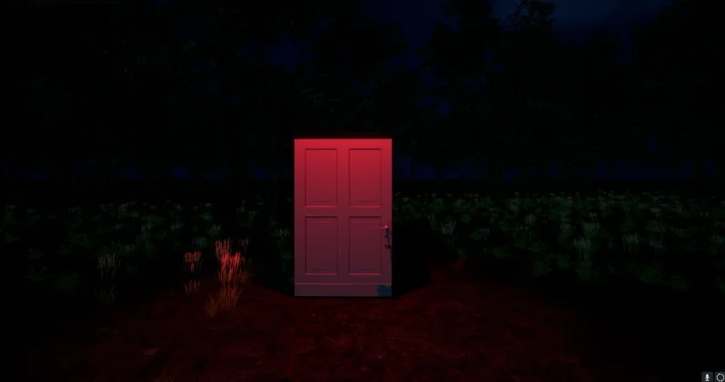
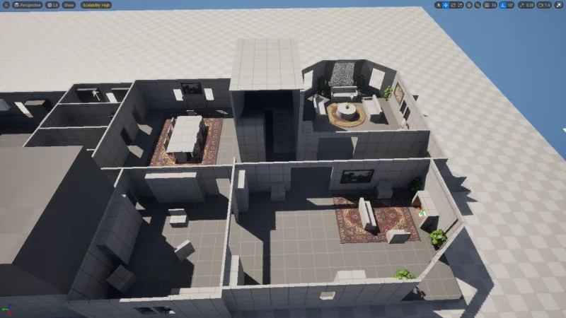
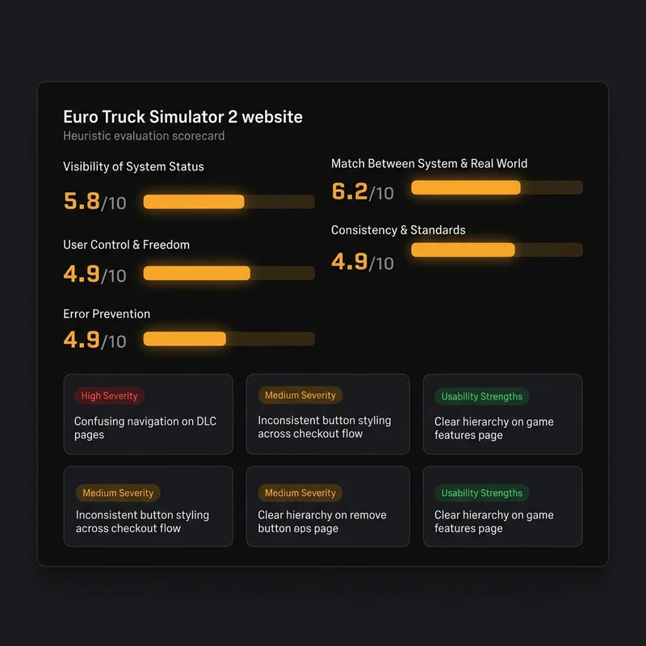
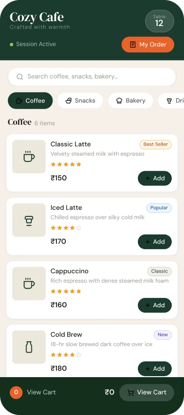

UI/UX design
NovelNest
A reading and authoring ecosystem, connecting discovery, reading, and publishing across 16 high-fidelity screens.
16 screens · Mobile experience
Explore UI/UX and game design. Browse by discipline, or search for a project, tool, or skill.
Find a project that speaks to your brief.
8 projects
A reading and authoring ecosystem, connecting discovery, reading, and publishing across 16 high-fidelity screens.
16 screens · Mobile experience

Game designAn Egyptian mythology roguelite prototype exploring combat, branching rooms, and a narrative-driven progression loop.
Unity · Action roguelite

UI/UX designA seller portal redesign that connects inventory, earnings, and shipping across 12 high-fidelity screens.
12 screens · Seller experience

Game designA psychological horror project told through architecture, lighting, and the unsettling details of a fractured inner world.
Unreal Engine · Psychological horror
An audit and proposed redesign that brings admissions, programmes, and student tasks into a clearer structure.
UX audit · Proposed redesign

Game designA Phasmophobia-inspired map balancing escape routes, choke points, and escalating tension from home to workshop.
Level concept · Ghost investigation

UI/UX designA heuristic review of the official website, identifying 13 usability pitfalls and opportunities to improve discovery.
13 findings · Website evaluation

UI/UX designA QR-first ordering experience, guiding guests from browsing the menu to reviewing their cart and tracking an order.
Mobile web · Self-service ordering
Try a different name or tool, or explore all the work.